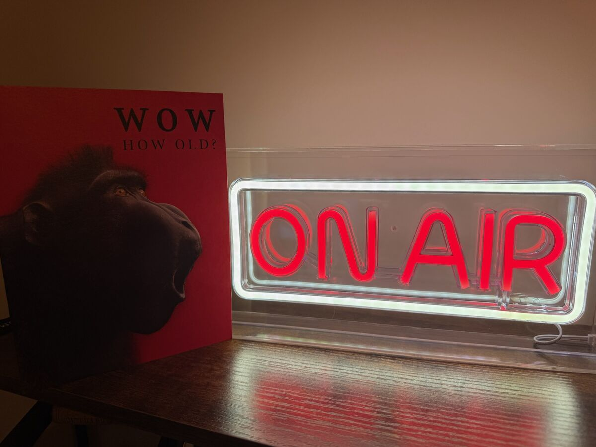
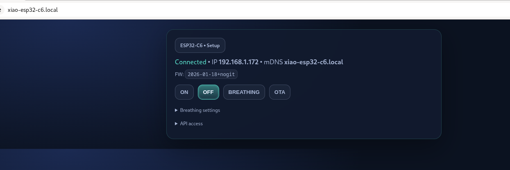

ESP32-C6 firmware · AWS IoT bridge · Chrome extension
How the On-Air sign works
A walk through the system, from the reason it exists down to the code, with live simulations of the firmware's behaviour.
Use ← → or swipe to move, O for an overview. Click the sign.
The idea
When you join a video call, a neon sign outside the room lights up. When the call ends, it goes dark. Nobody has to remember to flip a switch.
- Detection happens in the browser. The On-Air Meeting Trigger extension notices a meeting tab.
- Switching happens on a small ESP32-C6 board wired to the sign's power through a MOSFET.
- Reachability works both at home (direct HTTP on the LAN) and away (through AWS IoT Core).
- Safety comes first: the sign always powers up OFF, and no cloud secrets ship in the source or the binaries.

The big picture
Four pieces, two network paths. Click a component to see its role.
Pick a component
Each of the four boxes is a separate piece of software. Only the device firmware lives in this repository's main sketch; the bridge lives in scripts/cloud-bridge/.
How a command reaches the sign
Choose a scenario and step through it. The dot shows each message in flight.
Hardware: a low-side MOSFET switch
The sign and the board share one USB-C 5 V supply. Hover or tap a part.
Why this circuit
The ESP32 can't power a sign from a 3.3 V pin. Instead it drives the gate of a logic-level N-channel MOSFET that sits between the sign's negative lead and ground. Gate high: current flows and the sign lights. Gate low: the sign is dark. PWM on the gate gives the "breathing" effect.
Supported boards: Seeed XIAO ESP32-C6 (default) and DFRobot Beetle ESP32-C6. Both are built in CI.
Firmware shape: one sketch, a few cooperating ticks
onair-led-sign-firmware.ino~2300 lines: output, portal, HTTP API, OTA, reset, Wi-Fiaws_iot.{h,cpp}MQTT/TLS client, topics, Device Shadowaws_provisioning.{h,cpp}Fleet Provisioning by Claimpartitions.csvcustom 4 MB layout with two OTA slotsscripts/cloud-bridge/Python Lambda + deploy and test scriptsNo RTOS tasks of its own. HTTP runs in ESPAsyncWebServer's task; everything else is a non-blocking tick called from loop() every ~5 ms.
loop(): click a line
if (rebootPending …) ESP.restart()handleSerialStickerCommand()if (portalMode) dnsServer…; timeoutbreathingTick()handleResetLongPress()statusLedTick()wifiSupervisorTick()awsIotLoop()delay(5)
Each tick checks millis() and returns quickly, so one slow subsystem never freezes the others.
Power-up: walk the state machine
Make the choices the real world would make and see where the device ends up.
First-time setup: captive portal and Wi-Fi sticker
- No saved Wi-Fi: the board starts an AP+STA access point
C6-SETUP-<MAC12>at192.168.4.1and answers every DNS query with its own IP. Phones then pop up the captive portal by themselves. - The AP password is unique per device: three words from a 48-word list plus 4 random characters. It's stored in the
mfgNVS namespace and survives a normal factory reset, so the printed sticker stays valid. scripts/print-sticker.pyreads it over USB (GET-STICKER) and prints a Wi-Fi-join QR code. After the first successful Wi-Fi join the device setsstk_lock, so a stolen device won't reveal it over USB.
Try the generator
Uses the firmware's real word list.
- SSID
- Password
- QR payload
- Entropy
- 3 × log₂48 + 4 × log₂36 ≈ 37.4 bits
Output modes: off, on, breathing
This simulator runs the same integer maths as breathingTick() and statusLedTick().
Same rule as /api/mode: max ≤ min is rejected with HTTP 400.
Inside setOutputMode()
// every path ends up here: HTTP, MQTT, BOOT restore void setOutputMode(int mode) { if (mode < MODE_OFF || mode > MODE_BREATHING) mode = MODE_OFF; outputMode = mode; if (outputMode == MODE_BREATHING) { ensurePwmAttached(); // ledcAttach 1 kHz, 10-bit breathPhaseStart = millis(); } if (outputMode == MODE_ON) outputWrite(true); else if (outputMode == MODE_OFF) outputWrite(false); #if ENABLE_AWS_IOT awsIotPublishState(outputMode); // state topic + shadow #endif } // breathingTick(): a triangle wave elapsed = (millis() - breathPhaseStart) % period; if (elapsed < half) pct = min + span * elapsed / half; else pct = max - span * (elapsed - half) / half;
- One funnel. The local API, the MQTT
cmdtopic and the BOOT-button restore all callsetOutputMode(). That's why every change is reported to the cloud, whichever path caused it. - Invalid input fails safe. An unknown mode number becomes OFF.
- The mode isn't persisted. Breathing timing is saved to NVS; the on/off mode is not. A saved "ON" used to light the sign after a power cut even with no meeting in progress, because MQTT commands never updated the saved value.
- Polarity aware. If the output is the onboard LED and it's active-low, the PWM duty is inverted.
Local HTTP API and authentication
- An API token is generated on the first successful Wi-Fi join: 12 hex digits of MAC plus 64 bits from
esp_random(). It's shown on the device's web page. ensureApiAuth()accepts the token asX-API-Token,Authorization: Beareror?token=, and falls back to HTTP Basic (admin/esp32c6until you change it).- mDNS advertises
http://<hostname>.local/. - Reboots from HTTP handlers are deferred (
scheduleReboot()) so the response, or a 303 redirect, reaches the browser first.

Request builder
Example responseBOOT button: two reset levels
Press and hold the button below (mouse, touch or Space). Watch the LED and see what gets wiped.
Idle. Output mode is kept while you hold.
stk_lock| Hold | LED | Result |
|---|---|---|
| < 5 s | slow blink, 500 ms | nothing; mode restored |
| 5–15 s, then release | fast blink, 150 ms | clears cfg |
| reach 15 s | solid | erases all NVS at once |
The 5 s reset keeps the sticker (mfg) and the AWS identity (aws_iot). The 15 s reset runs nvs_flash_erase(): every namespace, including the per-device private key, is gone, as if the board were freshly flashed.
A 60 ms release debounce stops one noisy read from restarting the timer. The same check runs during boot and during the 12 s Wi-Fi connect wait. Serial equivalents: RESET-CFG, RESET-ALL, RESET-MFG; HTTP: POST /api/factory-reset[?deep=1].
Staying online without a human
The sign sits on a shelf for months. Drag the slider to see what the firmware does as an outage gets longer.
- Layer 1: tell the core to try harder.
setAutoReconnect(true),setSleep(false)(mains-powered, so modem power-save that misses beacons buys nothing), andpersistent(false)so reconnects don't wear out NVS. - Layer 2: active supervisor. Every 10 s while down,
wifiSupervisorTick()runsWiFi.disconnect()+WiFi.begin()again. That revives the supplicant even after the core's own retries have given up. - Layer 3: reboot. After 15 minutes offline,
ESP.restart()clears any stuck Wi-Fi/lwIP state. - Portal timeout. A setup AP nobody uses reboots after 10 minutes and tries the saved network again, which covers a router that was simply down at boot.
AWS IoT Core: optional, credentials only at runtime
- The firmware reads
{endpoint, thing, root_ca, cert, key}from theaws_iotNVS namespace. If any of them is missing, the module stays idle. - The only certificate compiled in is the public Amazon Root CA 1, and it can be overridden at runtime.
- NTP before TLS. The chip has no RTC; at the 1970 epoch every certificate looks "not yet valid". It waits up to 8 s for
pool.ntp.org. - Mutual TLS to port 8883, 60 s keep-alive, reconnect every 5 s on failure.
rc = -4means TLS succeeded but AWS dropped the link: wrong region or IoT policy. - Build with
ENABLE_AWS_IOT=0for a LAN-only firmware without the module.
Topics
onair/<thing>/cmd{"mode": 1}onair/<thing>/state{"mode":1,"thing":"onair-…","uptime_ms":…,"rssi":-55}$aws/things/<thing>/shadow/update{"state":{"reported":{"mode":1,"output_mode":"on",…}}}Both are published on every setOutputMode() and on every MQTT (re)connect, so the cloud learns about the "always boots OFF" reset too.
Getting a device identity onto the board
The simplest option: create a certificate yourself and paste it in once.
aws iot create-keys-and-certificate --set-as-active …
# then in the portal, or:
POST /api/aws/provision
{"endpoint":"xxxx-ats.iot.eu-west-1.amazonaws.com",
"thing_name":"onair-office", "cert":"-----BEGIN…", "key":"-----BEGIN…"}
scripts/provision-device.sh automates this from a workstation.
The values go straight into NVS and awsIotSetup() runs again. GET /api/aws/status reports {provisioned, connected, last_rc} and never echoes PEM data.
- Connect with the shared, low-privilege claim cert (NTP sync first).
- Publish
{}to$aws/certificates/create/json. …/create/json/acceptedreturns a new cert, key andcertificateOwnershipToken(15 s timeout).- Publish
{certificateOwnershipToken, parameters:{SerialNumber:<mac12>}}to$aws/provisioning-templates/<t>/provision/json. …/provision/json/acceptedreturns thethingName.awsIotProvision()saves the new identity. The claim cert is thrown away and never written to NVS.
Many devices can share one claim cert. Each one trades it for its own identity on first use.
Runs synchronously inside the HTTP handler (POST /api/aws/claim, ~10–30 s). Results are reported as AwsClaimResult: OK, BAD_INPUT, NO_WIFI, NTP_FAILED, CONNECT_FAILED, TIMEOUT, REJECTED…
Your own HTTPS service issues per-device credentials.
The contract is in docs/bootstrap-backend.md. The device side isn't wired up yet (deferred past v1).
All three paths write the same NVS record, so the MQTT client in aws_iot.cpp doesn't care how the identity got there.
The cloud bridge: one Lambda, two verbs
# scripts/cloud-bridge/lambda_function.py def lambda_handler(event, _ctx): if method == "OPTIONS": return 204 # CORS preflight if auth != f"Bearer {SHARED_TOKEN}": return 401 return handle_get(event) if method == "GET" \ else handle_post(event) # POST {"thing": "onair-office", "mode": 1} iot.publish(topic=f"onair/{thing}/cmd", qos=0, payload=json.dumps({"mode": mode})) # GET ?thing=onair-office doc = iot.get_thing_shadow(thingName=thing) mode = parse_reported_mode(doc) # mode → output_mode → state
- POST sends a command. The device doesn't have to be reachable from the internet, because it keeps an outbound MQTT connection open.
- GET returns the last reported state from the Device Shadow. The extension uses it to check the real state when the LAN is out of reach.
- Shared bearer token, plus an optional
ALLOWED_THINGSallowlist (403 otherwise). parse_reported_mode()uses the same mapping as the firmware and the extension, so0/1/2and"off"/"on"/"breathing"agree everywhere.- Unit tests in
test_lambda.py;validate-shadow.shchecks the whole path without hardware.
OTA updates and the flash layout
4 MB of flash. Hover a region.
The stock layout spent 1.5 MB on an unused SPIFFS partition, and the app was 99% full. The custom table moves that space into the two app slots (~63% used).
POST /updatewith a multipartfirmwarefield (auth required; disabled in setup-AP mode).- The new image is written to the inactive slot, then
otadatais switched to it. - The server replies 303 →
/update/done, a plain GET page, so back and refresh are safe. - That page polls
/api/statusevery second for up to 60 s and returns home once the device is back.
One-time catch: OTA can't change the partition table. Moving a device off the stock layout needs one USB flash of merged.bin at 0x0; after that, OTA works as usual.
Build and CI: proving the binary has no secrets
- Build matrix in Docker (
arduino-cli): XIAO and Beetle ESP32-C6. Version = tag name, ordate+sha. - Secret-scan guard runs
stringson the ELF and fails on a real ATS endpoint, or on more than one PEM body. - Rename,
sha256sum, upload artifacts. - On
v*tags: a GitHub Release with every board's.merged.bin,.binand.elf. - Optional: upload to S3 and create an AWS IoT Job (staged rollout, aborts at 25% failures). This is groundwork for future fleet OTA; the device-side Jobs handler isn't written yet.
Why count lines starting with "MII"?
Every real X.509 cert or private key is base64 of an ASN.1 SEQUENCE (first byte 0x30), so its body starts with MII. HTML placeholders and mbedTLS marker strings have no body. Exactly one hit is allowed: Amazon Root CA 1.
The ideas behind it
Pull-down resistor, OFF in setup(), mode not saved. A power blip never lights the sign by itself.
The LAN API works with no account. AWS is a runtime opt-in, and ENABLE_AWS_IOT=0 removes it entirely.
Credentials live in NVS. CI checks every binary for endpoints and PEM bodies.
Every change goes through setOutputMode(), which publishes state and shadow, so the extension can correct drift.
Wi-Fi supervisor, 15-minute reboot, portal timeout, MQTT backoff. No one has to power-cycle it.
BOOT holds and serial commands reset it even when the network is gone. A 15 s hold leaves no secrets behind.
Separate mfg namespace: a factory reset keeps the printed QR valid, and stk_lock hides it after deployment.
A cooperative loop() keeps breathing, reset feedback, Wi-Fi and MQTT running side by side.